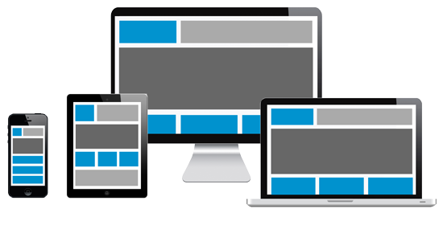

El diseño responsivo o Responsive Web Design es la técnica que nos permite crear sitios adaptables a las condiciones del ordenador o dispositivo desde donde se van a acceder, sobretodo en lo que tiene relación con la pantalla del sistema donde se están visualizando. El término responsivo es la característica de un sistema que tiene respuesta hacia el medio que le rodea. El diseñador que acuñó el término Responsive Web Design fue Ethan Marcotte, que publicó un post en List Apart y un libro donde explicaba todas las circunstancias y técnicas relacionadas con el diseño adaptable. Aunque es cierto que no fue el primer diseñador que pensó en la necesidad de adaptar el layout de las webs a las diferentes pantallas(de hecho los creadores del estándar CSS ya habían creado tecnologías para producir sitios adaptables), si fue el primero en usar ese término que hoy es tan popular.
Diseño Web Adaptativo (no adaptativo, que sería una traducción incorrecta del término “adaptive”) es una técnica que utiliza tamaños de pantalla preestablecidos: 320px, 480px, 760px, 960px, 1200px, 1600px y se crea un diseño a medida para cada uno de esos tamaños. Cuando se detecta el dispositivo, se le suministra el diseño que mejor se adapta de entre los realizados. Por lo tanto, no es tan flexible pero sí más cómodo de realizar.
La principal diferencia es que uno se adapta con un diseño fluido y el otro con un diseño a saltos.
El diseño responsive es fluido porque la estructura se ajusta de manera fluida independientemente del dispositivo en que se esté visualizando.
En cambio, el diseño adaptable se muestra en saltos ya que la página está mostrando algo diferente dependiendo del navegador o dispositivo en que se esté visualizando.
Las páginas de internet han evolucionado mucho desde su nacimiento, al igual que los dispositivos desde los que son consultadas. Durante mucho tiempo era posible ver en la parte inferior de muchas páginas web una leyenda que decía algo como "Esta página se visualiza correctamente en un pantalla de 800x600".
Pero los aparatos evolucionaron y se volvieron más versátiles: las pantallas cada vez lograban mayores resoluciones y las páginas web tenían que optar por uno u otro formato, el más novedoso o el más extendido.
Finalmente, en 2007 llegaron al mercado los primeros dispositivos móviles capaces de navegar en internet y de visualizar sitios diseñados para equipos de escritorio.
En 2010, la irrupción de las tablets en el mercado inclinó definitivamente la balanza a favor de los dispositivos móviles ya que consumir contenido en ellos era mucho más cómodo, así que los diseñadores de sitios web tuvieron que encontrar maneras de que sus sitios pudieran ser visualizados correctamente en ellos. El resultado fue el abandono de plataformas como Flash y la adopción de estándares como HTML 5.
Como sabemos, los breakpoints de un diseño Responsive Web Design no deben orientarse a tamaños de pantalla estándar, sino debe ser algo específico para tu propio diseño web. Sin embargo, muchas personas quieren saber, al menos a modo orientativo, qué medidas de pantallas habituales se pueden encontrar en los dispositivos.
Recordando que cualquier colección de medidas para media queries está siempre desactualizada e incompleta, porque es imposible albergar todas y cada una de las medidas de pantalla que hay en el mercado de ordenadores y dispositivos. Así que toma estas medidas de viewport como una referencia únicamente orientativa y sobre todo parcial.
Dispositivos:Teléfonos, televisores
Tamaño de ventana:320 x 569, 360 x 640, 480 x 854
Punto de interrupción:640px o menos
Dispositivos:Phablets, tabletas
Tamaño de ventana: 960x540
Punto de interrupción:641px a 1007px
Dispositivos:PC, portátiles, Surface Hubs
Tamaño de ventana:1024 x 640, 1366 x 768, 1920 x 1080
Punto de interrupción:1008px o mayor
El diseño responsivo solo pudo surgir gracias a la consulta a los media. Las consultas a los media nos permiten ejecutar una serie de pruebas y aplicar CSS selectivamente para diseñar la página de manera que resulte adecuada a las necesidades del usuario.
Se puede añadir múltiples consulta a los media dentro de una hoja de estilo, y ajustar todo tu diseño o solo partes de él para que se adapte mejor a los diferentes tamaños de pantalla. Los puntos en los que se introduce una consulta a los media y se cambia el diseño se conocen como puntos de interrupción.
Los métodos modernos de diseño de páginas web, como el diseño en columnas, Flexbox y Grid son responsivos por defecto. Todos estos métodos asumen que tratas de crear una cuadrícula flexible y te proporcionan los modos más fáciles de hacerlo.
Cuando especificas un atributo column-count, esto indica en cuántas columnas deseas dividir tu contenido. El navegador entonces calcula el tamaño de estas columnas, que cambiará de acuerdo con el tamaño de la pantalla.
Si en lugar de ello estableces el atributo column-width, especificas un ancho mínimo. El navegador crea tantas columnas de ese ancho como quepan cómodamente en el contenedor, y reparte el espacio entre todas las columnas.
En el método Flexbox, los elementos flexibles se encogen y distribuyen el espacio entre los elementos según el espacio que hay en su contenedor, según su comportamiento inicial. Al cambiar los valores de flex-grow y flex-shrink, puedes indicar cómo deseas que se comporten los elementos cuando a su alrededor hay más o menos espacio.
En el diseño de cuadrículas con CSS, la unidad fr permite la distribución del espacio disponible en las trazas de la cuadrícula.